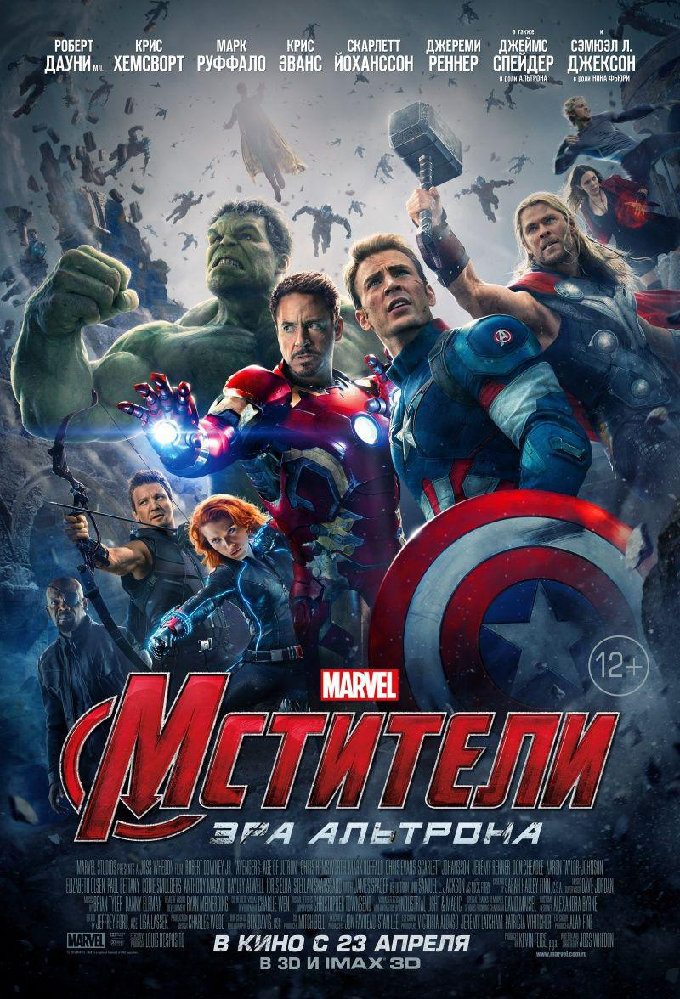

Команда Мстителей, ставшая независимой структурой после падения«Щ. И. Т.а», в поисках скипетра бога Локиатакует последнюю базу «Гидры» в Зоковии, где им противостоят, в частности, близнецы Пьетро (Ртуть) и Ванда Максимофф — мутанты, получившие сверхспособности в результате экспериментов учёных «Гидры» со скипетром. Ванда вторгается в разум Железного человека и посылает ему видение его тайного страха: падения Мстителей и нового вторжения на Землю. Старк приходит к выводу, что необходимо в скорейшее время закончить миротворческий проект «Альтрон», который будет служить защитой человечеству. Брюс Бэннер сначала выступает против затеи Тони, так как «Альтрон» подразумевает глобальный контроль над людьми, а такие как Стив Роджерс и Тор могут не одобрить его план. Тони всё же убеждает Бэннера помочь ему, скрыв информацию от команды, так как успех позволит Брюсу спокойно жить без Халка.
Изучив скипетр в башне Мстителей (перестроенной после битвы за Нью-ЙоркСтарк Тауэр), Старк и Бэннер обнаруживают сокрытый в камне искусственный интеллект, который поможет им осуществить проект, и берутся воссоздать его. Старк не уверен, что учёл всё. Пока Мстители находятся на вечеринке в честь падения «Гидры», на которой только Тор имеет возможность поднять свой молот, Джарвис наблюдает за ходом эксперимента. Альтрон оживает и начинает анализ данных, в ходе которого видит, что человечество находится в «застое» и скоро уничтожит само себя. Эксперимент выходит из-под контроля, и Альтрон, захватив через Джарвиса контроль над «Железным легионом», серией автономных костюмов Железного человека, решает воплотить свой план по «спасению» Земли в жизнь. Альтрон нападает на Мстителей, сбегает из башни, уничтожив Джарвиса и забрав с собой скипетр. Команда разобщена из-за того, что Старк скрыл от них информацию, но тем не менее решается работать вместе.
Альтрон отправляется в замок барона фон Штрукера, под которым «Гидра» создала лабораторию по изучению расы читаури, собранной после битвы в Нью-Йорке, и на базе их брони воссоздаёт себе армию дронов и «временные» модули-аватары своей личности. После он вербует близнецов, обещая им расправу над «Старком», ненависть к которому те испытывают из-за того, что снаряды, изготовленные его корпорацией, стали причиной гибели их родителей во время войны в Зоковии, и начинает осуществлять план по изготовлению своего «идеального» тела. Мстители находят информацию о том, что Альтрону нужен вибраниум, чьи залежи находятся в Африке. Во время кражи вибраниума у преступного торговца Улисса Кло на портовой базе в ЮАР, Альтрон и близнецы вступают в бой с Мстителями. Пьетро помогает Ванде быстро передвигаться между героями, а она погружает часть команды Мстителей в видения, деморализующие их. Будучи под воздействием Ванды, Халк отправляется громить находящийся неподалёку от базы Йоханнесбург. Старку, ценой неимоверных усилий и разрушений, удаётся его остановить, используя огромную броню «Халкбастер», запущенную с орбитальной станции «Вероника».
Потерпевшие поражение и деморализованные, Мстители отправляются в дом Клинта Бартона, чтобы скрыться на время. Там они встречают Ника Фьюри. Мстители стараются справиться со своими «демонами»: Наташа предлагает Брюсу сбежать и жить вместе, а Тор, обеспокоенный видениями Ванды Максимофф, обращается за помощью к своему другу и учёному Эрику Селвигу. Мстители летят в Корею, где Альтрон, при помощи доктора Хелен Чо (которую до этого он взял под свой контроль при помощи скипетра Локи) создаёт себе новое тело. Мстителям удаётся забрать регенератор с телом до того, как Альтрон загрузил бы туда своё сознание. К Капитану Америка присоединяются близнецы, осознавшие настоящие планы Альтрона, и вместе им удаётся дать ему отпор. Однако Ванда предупреждает об опасностях, которые таит регенератор.
Тони Старк и Брюс Бэннер, изучив тело, решают переместить в него сознание Джарвиса, который успел уйти во время стычки с разумом Альтрона. Процесс ещё не завершён, когда прибывают Капитан и близнецы. Они пытаются уничтожить тело, опасаясь повторения уже произошедшей истории. Происходит стычка между героями,
которую прерывает внезапно прибывший Тор. При помощи Мьёльнираон завершает процесс. Андроид, получивший разум при помощи Камня бесконечности (который и был источником скипетра), называет себя Вижен и присоединяется к Мстителям, чтобы остановить своего первичного создателя.
Команда отправляется в Зоковию, где Альтрон готовит последний этап своего плана: переделав один из трофейных кораблей читаури в реактивный двигатель нижней тяги, он поднимает в воздух целый регион, который потом планирует обрушить на Землю, словно огромный астероид, что убьёт всю органическую жизнь на планете. Эвакуировать жителей Мстителям помогает Ник Фьюри, Воительи агенты реанимированного «Щ. И. Т.а». После продолжительных боёв, Мстителям удаётся уничтожить основные силы Альтрона, но сам киборг выживает и в последний момент атакует Соколиного Глаза. Пьетро успевает прикрыть его, но сам погибает. Потерявшая брата Ванда находит Альтрона и лично убивает, вырвав его «сердце». Железный человек и Тор успевают подорвать поднятый в воздух регион Зоковии, чем спасают по сути всё население Земли. Вижен встречается с последним киборгом, в которого вселился разум Альтрона, и после короткого разговора уничтожает его.
Выполнив задачу, часть команды расходится: Клинт возвращается к семье; Старк, по примеру Бартона, также «берёт тайм-аут»; Брюс Бэннер в одиночку улетает на самолёте и пропадает без вести; Тор улетает в Асгард, объясняя, что четыре Камня бесконечности появились неспроста; Капитан Америка и Чёрная вдова приветствуют новых членов Мстителей: Воителя, Вижена, Сокола и Алую ведьму.
В сцене после титров Танос надевает перчатку[~ 1] и намеревается сам собрать Камни Бесконечности[9].
